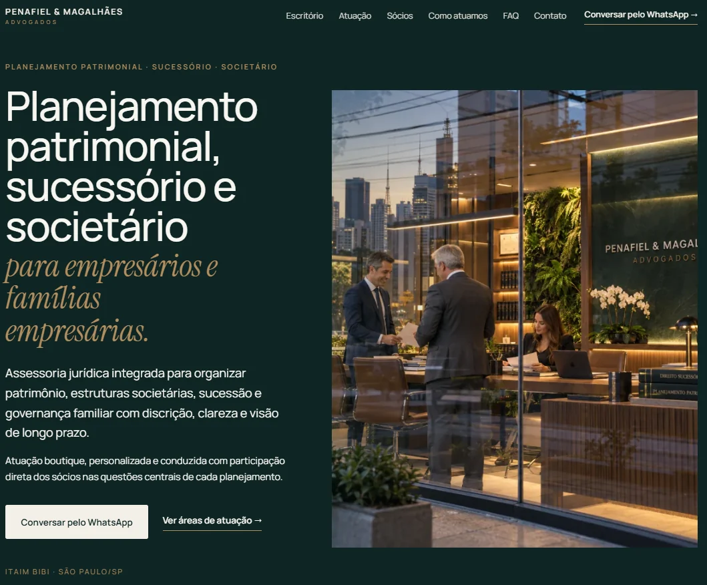

Apresentação institucional
Quem é o escritório, perfil dos profissionais, formação e informações que ajudam o visitante a entender a estrutura de atendimento.
SITE PARA ADVOGADOS
Presença digital própria para organizar áreas de atuação, posicionamento institucional, informações profissionais e contato em uma página clara e responsiva.
ADVOCACIA
A página deve apresentar o escritório ou profissional, áreas de atuação, forma de atendimento e contato sem depender de uma sequência de posts para explicar o serviço.

ESTRUTURA
O conteúdo é adaptado ao posicionamento e às regras aplicáveis à comunicação profissional do escritório.
Quem é o escritório, perfil dos profissionais, formação e informações que ajudam o visitante a entender a estrutura de atendimento.
Serviços jurídicos organizados de forma clara, sem obrigar o visitante a interpretar uma lista confusa.
Textos institucionais e explicativos que ajudam a demonstrar especialização sem inventar resultados ou prometer desfecho.
WhatsApp, formulário e informações de atendimento posicionados de forma objetiva.
Estrutura de títulos, metadados, conteúdo e contexto geográfico quando pertinente, sem promessa de primeiro lugar.
Antes de publicar, conteúdos sensíveis devem ser conferidos à luz das regras profissionais aplicáveis.
PRÓXIMO PASSO
Me envie o contexto do negócio, o que precisa melhorar e, se houver, o site ou Instagram atual. A conversa começa pelo problema, não por um pacote fechado.